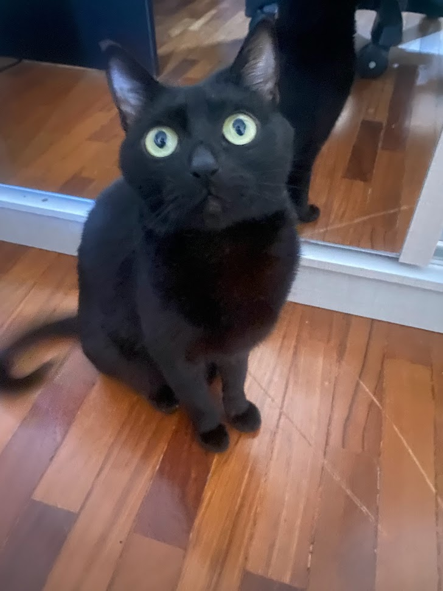

Exercícios
Por enquanto estamos nos conhecendo, mas eu criei simpatia pelo alunos do periodo da noite :D
Então irei listar minhas coisas favoritas do dia a dia:
- Jogos, não tem como fizeram parte da minha vida
- Musica, sempre estou ouvindo musica, tenho uma playlist para cada momento
- Cozinhar, como estou morando sozinho, tenho pegado muit gosto por aprender novas receitas. Sem querer me gabar mas eu mando bem

Outra coisa que faz parte do meu dia a dia é a minha gata
